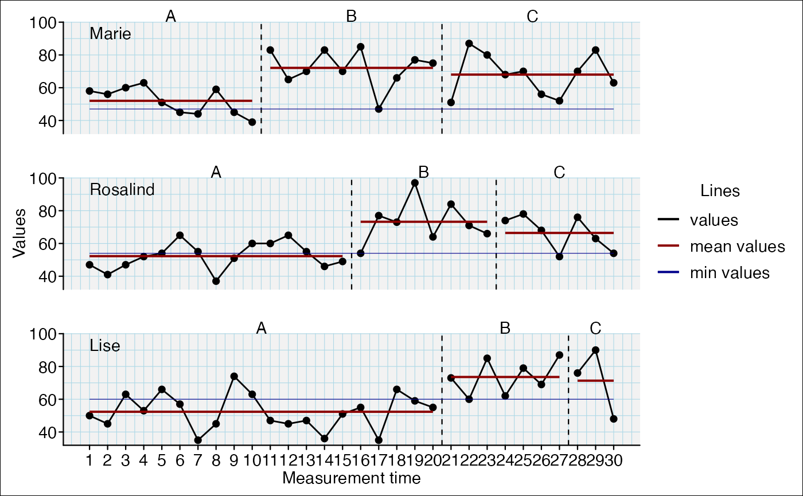
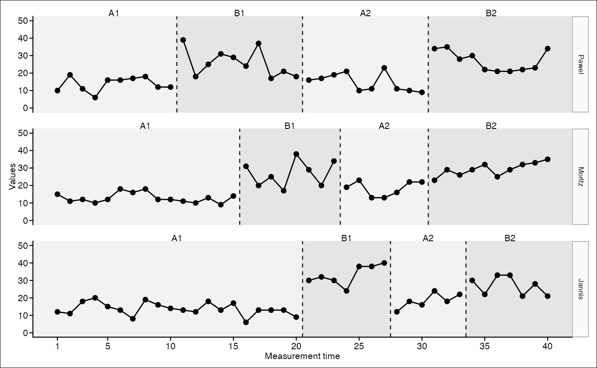
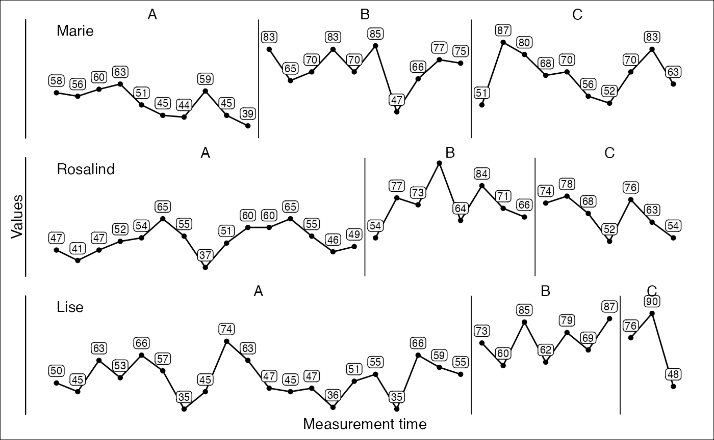
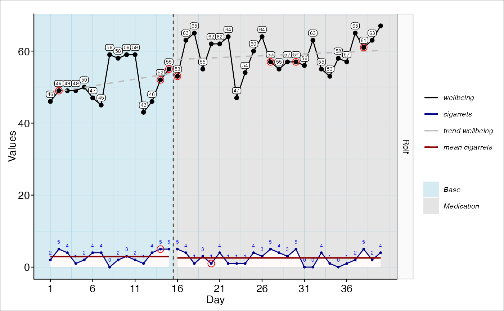

example_plots.RmdWe started developing a new add-on package to scanfor visualizing single-case data: scplot. This function will gradually replace the plot.scdf() (short: plot()) function already included in scan and finally be included into to the scan package. Here are some advantages of using scplot over the standard scan plot function:
scplot is already much more versatile than plot has been.scplot was designed to encompass a pipe style coding which is much cleaner, more intelligible and easier to code.scplot is based on ggplot2 and produces a ggplot2 object which can be modified and extended to any wishes.We consider the state of scplot to be experimental. That is, the code and syntax might change in future versions so backward compatibility is not guaranteed.
But we will keep the “old” plot.scdf in future versions of scan.
Here are a few plots that have been generated with scplot to demonstrate its possibilities.
scplot(exampleAB)
scplot(exampleABC) %>%
add_statline("mean", color = "darkred")
scplot(exampleABC) %>%
add_statline("mean", color = "darkred") %>%
add_statline("min", phase = "B", width = 0.2, color = "darkblue") %>%
add_legend()
scplot(exampleA1B1A2B2) %>%
set_xaxis(increment_from = 0, increment = 5) %>%
set_yaxis(limits = c(0, 50)) %>%
set_ylabel(angle = 0) %>%
add_theme("default", "small") %>%
set_casenames(type = "strip") %>%
set_panel(fill = c("grey90", "grey80"))
scplot(exampleABC) %>%
set_xaxis(increment = 2) %>%
set_yaxis(color = NA) %>%
add_labels(text = list(color = "black", size = 0.7),
background = list(fill = "grey98"), nudge_y = 7) %>%
add_theme("minimal")
scplot(example_A24) %>%
add_theme("default") %>%
add_statline("lowess", color = "darkred", width = 1.5) %>%
add_statline("loess", color = "red", width = 1.5) %>%
add_statline("movingMean", color = "lightpink", width = 1.5) %>%
set_xaxis(size = 0.8, angle = 35) %>%
set_dataline(size = 0) %>%
add_legend(position = c(0.8, 0.75), background = list(color = "grey50")) %>%
set_phasenames(c("no speedlimit", "with speedlimit"), position = "left",
hjust = 0, vjust = 1) %>%
set_casenames("") %>%
add_title("Effect of a speedlimit on the A24") %>%
add_caption("Note: Moving mean calculated with lag two.", face = 3) %>%
add_ridge(color = "lightblue")
scplot(exampleAB_add) %>%
add_dataline("cigarrets", color = "darkblue", size = 1) %>%
add_statline("trend", linetype = "dashed") %>%
add_statline("mean", variable = "cigarrets", color = "darkred") %>%
add_marks(positions = c(14,20), size = 3, variable = "cigarrets")%>%
add_marks(positions = "cigarrets > quantile(cigarrets, 0.75)", size = 3) %>%
set_xaxis(increment = 5) %>%
set_phasenames(color = NA) %>%
set_casenames(type = "strip") %>%
add_legend(position = "right", title = list(color = NA)) %>% #,
# title = list(size = 0),
# text = list(face = 3)) #%>%
set_panel(fill = c("lightblue", "grey80")) %>%
add_ridge(color = "snow", variable = "cigarrets") %>%
add_labels(variable = "cigarrets", nudge_y = 2,
text = list(color = "blue", size = 0.5)) %>%
add_labels(nudge_y = 2, text = list(color = "black", size = 0.5),
background = list(fill = "white"))
scplot(exampleA1B1A2B2) %>%
set_xaxis(increment = 4, color = "brown") %>%
set_yaxis(color = "sienna3") %>%
set_ylabel("Points", color = "sienna3", angle = 0) %>%
set_xlabel("Weeks", size = 1, color = "brown") %>%
add_title("Points by week", color = "sienna4", face = 3) %>%
add_caption("Note: An extensive Example.",
color = "black", size = 1, face = 3) %>%
set_phasenames(c("Baseline", "Intervention", "Fall-Back", "Intervention_2"),
size = 0) %>%
add_ridge(alpha("lightblue", 0.5)) %>%
set_casenames(labels = sample_names(3), color = "steelblue4", size = 0.7) %>%
set_panel(fill = c("grey80", "grey95"), color = "sienna4") %>%
add_grid(color = "grey85", size = 0.5) %>%
set_dataline(color = "black", width = 0.5, linetype = "solid",
dots = "sienna4", size = 0.5, shape = 18) %>%
add_labels(text = list(color = "sienna", size = 0.7), nudge_y = 4) %>%
set_seperator(extent = 0.8, size = 0.5,
linetype = "solid", color = "sienna") %>%
add_statline(stat = "trendA", color = "tomato2") %>%
add_statline(stat = "max", phase = c(1, 3), linetype = "dashed") %>%
add_marks(case = 1:2, positions = 14, color = "red3", size = 2, shape = 4) %>%
add_marks(case = "all", positions = "values < quantile(values, 0.1)",
color = "blue3", size = 1.5) %>%
add_marks(positions = outlier(exampleABAB), color = "brown", size = 2) %>%
add_text(case = 1, x = 5, y = 35, label = "Interesting",
color = "darkgreen", angle = 20, size = 0.7) %>%
add_arrow(case = 1, 5, 30, 5, 22, color = "steelblue") %>%
set_background(fill = "white") %>%
add_legend()